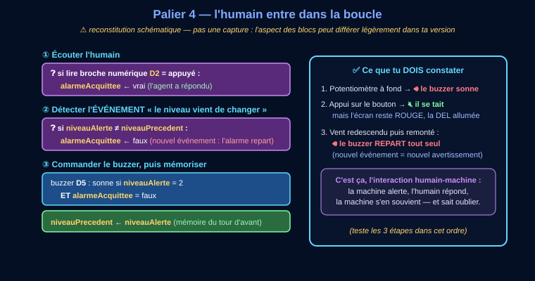
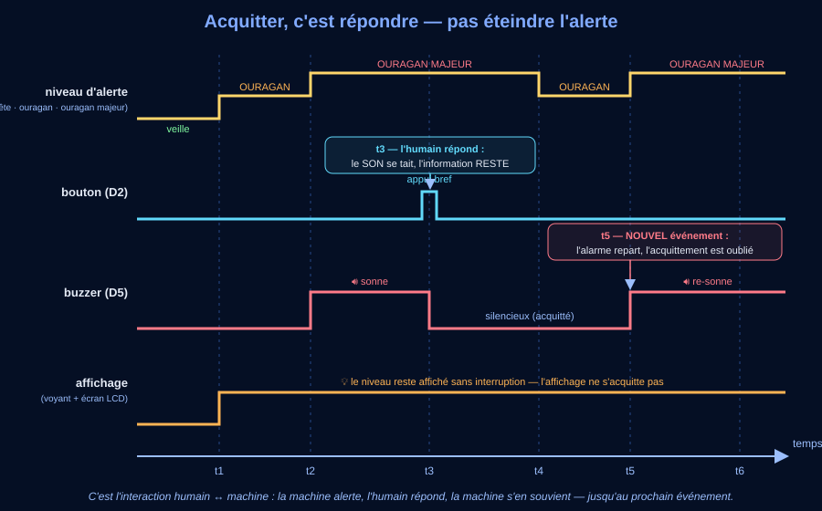

🎯 Page 3 sur 4 — Programmer l'acquittement, lire le code généré, diagnostiquer une panne.
📄 Réseau capricieux, ou besoin de tout avoir sous la main ? La séquence entière en une seule page — mêmes activités, mêmes réponses enregistrées, aucun chargement entre les séances.
Ton parcours 🅰/🅱/🅲 se choisit en page 1 : il est retenu pour toute la séquence. Cette page-ci ne contient aucun bloc propre à un parcours.
Le mode essentiel masque le référentiel, les corrections et les compléments : il ne reste que les consignes et les exercices. À activer si la page te paraît trop chargée.
C'est la station, simulée fidèlement : le curseur joue le rôle du potentiomètre-anémomètre (A1) ; l'écran, les quatre voyants (vert D6, jaune D7, orange D3, rouge D4), le buzzer (D5) et le bouton (D2) réagissent comme sur la vraie carte — y compris la boucle du programme, exécutée environ 5 fois par seconde. Tes expériences ici sont tracées : elles servent à valider les activités et à exécuter ta recette de la séance 4.
Mesure brute correspondante (CAN 10 bits) : — / 1023
Un seul voyant allumé à la fois. Le vert est fixe ; les trois autres pulsent — la pulsation est un signal, pas une décoration. Le niveau est toujours écrit sur l'écran : tu n'as jamais besoin de la couleur seule pour le lire.
Question directrice : comment le programme se souvient-il que l'agent a répondu — et comment sait-il l'oublier au bon moment ?

🧪 Les deux expériences au banc d'essai (elles sont tracées ✔) : ① monte le vent au-dessus de 178, laisse sonner, puis ACQUITTE — le son se tait, l'écran reste rouge ; ② redescends sous 100, puis remonte au-dessus de 150 — le buzzer repart tout seul.

Le niveau attendu est exactement le même qu'avec la consigne libre : ces débuts de phrases retirent l'obstacle de la rédaction, pas l'exigence scientifique. Recopie-les et complète chaque « ____ ».
alarmeAcquittee sert à retenir que ____.Refais les deux expériences au banc en regardant le chronogramme en même temps : chaque ligne du dessin correspond à ce que tu viens de voir. La DEL et le buzzer n'obéissent pas à la même règle — c'est voulu.
alarmeAcquittee est un booléen : vrai = « l'agent a répondu ». Le buzzer sonne seulement si (niveau = 2) ET (alarmeAcquittee = faux). Et quand niveauAlerte ≠ niveauPrecedent, le programme remet alarmeAcquittee à faux : nouvel événement, nouvel avertissement sonore.
Q1 : le buzzer se tait, l'écran et la DEL restent en alerte — acquitter, c'est répondre, pas éteindre. Q2 : le changement de niveau est un nouvel événement : le programme efface l'acquittement pour re-prévenir. Q3 : le cahier des charges l'exige (« sans jamais éteindre l'affichage ni le signal lumineux ») : le son dérange, on peut le couper ; l'information doit rester. Q4 : niveauPrecedent.
Explication attendue : alarmeAcquittee retient que l'agent a pris connaissance de l'alarme ; tant qu'elle vaut vrai, le buzzer reste muet même en alerte. Elle repasse à faux quand le niveau CHANGE (niveauAlerte ≠ niveauPrecedent) : un nouvel événement mérite un nouvel avertissement.
Méthode : détecter un événement = comparer l'état actuel à l'état mémorisé du tour précédent. Ce motif (état + mémoire + comparaison) est partout : notifications de téléphone, détecteurs de fumée, alarmes de voiture.
Limite : notre bouton est lu 5 fois par seconde : un appui très bref entre deux lectures pourrait être raté — les vrais systèmes utilisent des interruptions.
alarmeAcquittee à faux au changement de niveau — l'alarme ne sonnerait plus jamais après le premier appui : bug silencieux et dangereux ; confondre l'état (niveau = 2) et l'événement (le niveau VIENT DE passer à 2).alarmeAcquittee), et la détection d'événement par comparaison à l'état précédent (niveauPrecedent). État ≠ événement : l'état dure, l'événement est l'instant du changement.const int BROCHE_VENT = A1; // potentiomètre « anémomètre » sur A1 const int SEUIL_JAUNE = 63; // à partir de 63 : tempête tropicale const int SEUIL_ORANGE = 118; // à partir de 118 : ouragan const int SEUIL_ROUGE = 178; // à partir de 178 : ouragan majeur int vitesseVent = 0; // vitesse du vent calculée, en km/h int niveauAlerte = 0; // 0 veille · 1 tempête · 2 ouragan · 3 majeur bool alarmeAcquittee = false; // true si l'humain a acquitté l'alarme
loop())int mesureBrute = analogRead(BROCHE_VENT); // valeur brute du CAN (0-1023) vitesseVent = map(mesureBrute, 0, 1023, 0, 250); // conversion en km/h if (vitesseVent >= SEUIL_ROUGE) { niveauAlerte = 3; // ouragan majeur } else if (vitesseVent >= SEUIL_ORANGE) { niveauAlerte = 2; // ouragan } else if (vitesseVent >= SEUIL_JAUNE) { niveauAlerte = 1; // tempête tropicale } else { niveauAlerte = 0; // simple veille }
// Sous-programme (fonction) : affiche le niveau et la vitesse sur le LCD // — la structuration en sous-programmes est exigée en 3e. void afficherEtat() { ecran.setCursor(0, 0); // ligne 1 : le niveau if (niveauAlerte == 3) { ecran.setRGB(255, 0, 0); // fond ROUGE ecran.print("OURAGAN MAJEUR "); } /* … puis ouragan, tempête, veille … */ ecran.setCursor(0, 1); // ligne 2 : la mesure ecran.print("Vent: "); ecran.print(vitesseVent); ecran.print(" km/h "); }
Le programme envoie sa trace au moniteur série. Voici ce qu'un binôme a relevé sur SA station (trace enregistrée — données simulées) :
vent(km/h)=58 niveau=0 vent(km/h)=71 niveau=0 ⬅ ⚠ vent(km/h)=95 niveau=0 ⬅ ⚠ vent(km/h)=112 niveau=0 ⬅ ⚠ vent(km/h)=131 niveau=2 vent(km/h)=186 niveau=3
Le niveau attendu est exactement le même qu'avec la consigne libre : ces débuts de phrases retirent l'obstacle de la rédaction, pas l'exigence scientifique. Recopie-les et complète chaque « ____ ».
Relie chaque extrait au palier qui l'a construit : extrait 2 = paliers 1 et 2. Pour d) : la colonne « vent » monte normalement — quelle colonne se comporte mal, et quel morceau du programme la fabrique ?
La vitesse affichée (58 → 186) prouve que capteur + CAN + conversion marchent. Le niveau reste à 0 sur TOUTE la plage 63-117, là où il devrait valoir 1 : c'est la DÉCISION qui rate. Et comme 131 donne bien niveau 2 et 186 niveau 3, les tests « ≥ 118 » et « ≥ 178 » existent et fonctionnent : le défaut est isolé sur le test « ≥ 63 » — faux, ou absent. Trois lignes de trace ont suffi à innocenter tout le reste de la chaîne.
Q1 : const = valeur que le programme s'interdit de modifier : les seuils viennent du cahier des charges, pas de l'exécution. Q2 : le calcul de conversion du palier 1 — × 250 ÷ 1023 dans les blocs Vittascience, map() côté C++, « réétalonner » dans ArduBlock : trois écritures, une seule idée, la proportionnalité. Q3 : le SINON SI — testé seulement si le premier SI a dit non. Q4 : lisibilité + un seul endroit à tester et corriger : c'est la structuration en sous-programmes exigée en 3e. Q5 : un seuil mal réglé (seuilJaune, seuilOrange ou seuilRouge) ou un SINON SI absent.
Justification attendue : la trace prouve que la vitesse monte correctement (58 → 71 → 95 → 112 → 131 → 186) : capteur, CAN et conversion fonctionnent. La panne apparaît entre la vitesse et le NIVEAU : c'est la décision. Et puisque 131 déclenche le niveau 2 et 186 le niveau 3, les tests ≥ 118 et ≥ 178 marchent : le défaut est dans le test ≥ 63 — le plus probable étant que seuilJaune ait été réglé à 118 par recopie, ou que sa branche SINON SI ait été supprimée.
Méthode (mise au point) : la trace du moniteur série découpe la chaîne en tronçons : on cherche le PREMIER endroit où les valeurs deviennent fausses — tout ce qui est en amont est innocenté. C'est exactement le raisonnement du banc de tests de l'atelier 3e_C9.1.
Limite : lire le C++ n'est pas au programme de 3e pour l'ÉCRIRE — mais savoir le lire te permet de vérifier ce que tes blocs fabriquent, et c'est un immense avantage au lycée.
= (ranger) et == (comparer) dans le C++ ; croire que les blocs et le C++ sont deux programmes différents — c'est le MÊME, dans deux écritures.map(), « si / sinon si / sinon » → if / else if / else, et l'affichage vit dans un sous-programme (afficherEtat()) — structuration exigée en 3e. La mise au point s'appuie sur la trace du moniteur série : on innocente la chaîne tronçon par tronçon.